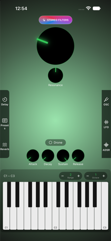
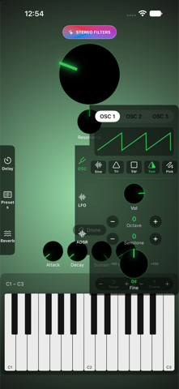
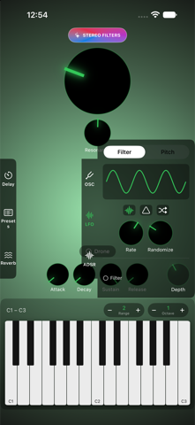
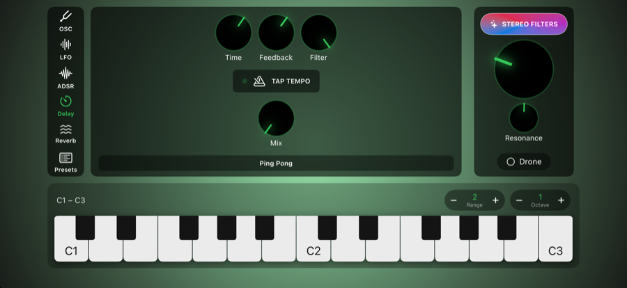

DroneSynth
A hands-on, analog-style synthesizer built for ambient textures, evolving pads, and hypnotic drones — right on your iPhone or iPad.



Features
- 3 independent oscillators — sine, triangle, square, saw, and pink noise
- Full ADSR envelope and two independent LFOs modulating filter cutoff and pitch
- Moog Ladder filter with optional true stereo filtering (in-app purchase)
- Tempo-syncable delay with tap-tempo and ping-pong bouncing
- Reverb across four spaces — Room, Hall, Plate, and Cathedral
- Drone/sustain mode, on-screen keyboard, and unlimited saved presets
- Adaptive portrait and landscape layouts

How it works
DroneSynth is built around three oscillators feeding a shared filter and envelope, with two LFOs and a delay/reverb send for movement and space.
- OSC — pick a waveform (sine, triangle, square, saw, or pink noise) per oscillator and tune its volume, octave, semitone, and fine pitch.
- ADSR — shape how each note attacks, decays, sustains, and releases.
- LFO — two low-frequency oscillators modulate filter cutoff and pitch for evolving, animated textures.
- Delay & Reverb — tap out a tempo on the delay, bounce it ping-pong across the stereo field, then wash it through Room, Hall, Plate, or Cathedral reverb.
- Drone — toggle Drone mode to sustain a chord indefinitely without holding down keys, ideal for ambient beds and long-form textures.
- Keyboard — play from the on-screen keyboard, with adjustable range and octave for reaching exactly the register you want.
- Presets — save and recall as many patches as you like from the Presets panel.
- Stereo Filters — an optional one-time purchase that splits the Moog Ladder filter across the left and right channels for wider, more spacious tones.
Support
Running into an issue, or have a feature request or feedback? We'd love to hear from you.
Email SupportPrivacy
DroneSynth does not collect any personal data, does not track you, and does not use analytics or advertising SDKs. Presets and preferences are stored only on your device.
Read the full Privacy Policy →